knitr::opts_chunk$set(comment = NA)
library(janitor)
library(kableExtra)
library(tidyverse)
theme_set(theme_bw())13 Correlation
13.1 Setup: Packages Used Here
13.2 Our Data
In this chapter, we will make use of the nnyfs data, as well as several simulated examples stored on our 431-data page as .csv files.
13.3 Measuring Correlation
Two correlation measures are worth our immediate attention.
- The one most often used is called the Pearson correlation coefficient, and is symbolized with the letter r or sometimes the Greek letter rho (\(\rho\)).
- Another tool is the Spearman rank correlation coefficient, also occasionally symbolized by \(\rho\).
For the nnyfs data, the Pearson correlation of fat and protein can be found using the cor() function.
fat protein
fat 1.0000000 0.6671209
protein 0.6671209 1.0000000Note that the correlation of any variable with itself is 1, and that the correlation of fat with protein is the same regardless of whether you enter fat first or protein first.
13.4 The Pearson Correlation Coefficient
Suppose we have \(n\) observations on two variables, called X and Y. The Pearson correlation coefficient assesses how well the relationship between X and Y can be described using a linear function.
- The Pearson correlation is dimension-free.
- It falls between -1 and +1, with the extremes corresponding to situations where all the points in a scatterplot fall exactly on a straight line with negative and positive slopes, respectively.
- A Pearson correlation of zero corresponds to the situation where there is no linear association.
- Unlike the estimated slope in a regression line, the sample correlation coefficient is symmetric in X and Y, so it does not depend on labeling one of them (Y) the response variable, and one of them (X) the predictor.
Suppose we have \(n\) observations on two variables, called \(X\) and \(Y\), where \(\bar{X}\) is the sample mean of \(X\) and \(s_x\) is the standard deviation of \(X\). The Pearson correlation coefficient \(r_{XY}\) is:
\[ r_{XY} = \frac{1}{n-1} \sum\limits_{i=1}^n (\frac{x_i - \bar{x}}{s_x}) (\frac{y_i - \bar{y}}{s_y}) \]
13.5 Studying Correlation through Six Examples
The correx1 data file we read in at the start of this Chapter contains six different sets of (x,y) points, identified by the set variable.
summary(correx1) set x y
Length:277 Min. : 5.897 Min. : 7.308
Class :character 1st Qu.:29.487 1st Qu.:30.385
Mode :character Median :46.154 Median :46.923
Mean :46.529 Mean :49.061
3rd Qu.:63.333 3rd Qu.:68.077
Max. :98.205 Max. :95.385 13.5.1 Data Set Alex
Let’s start by working with the Alex data set.
ggplot(filter(correx1, set == "Alex"), aes(x = x, y = y)) +
geom_point() +
labs(title = "correx1: Data Set Alex")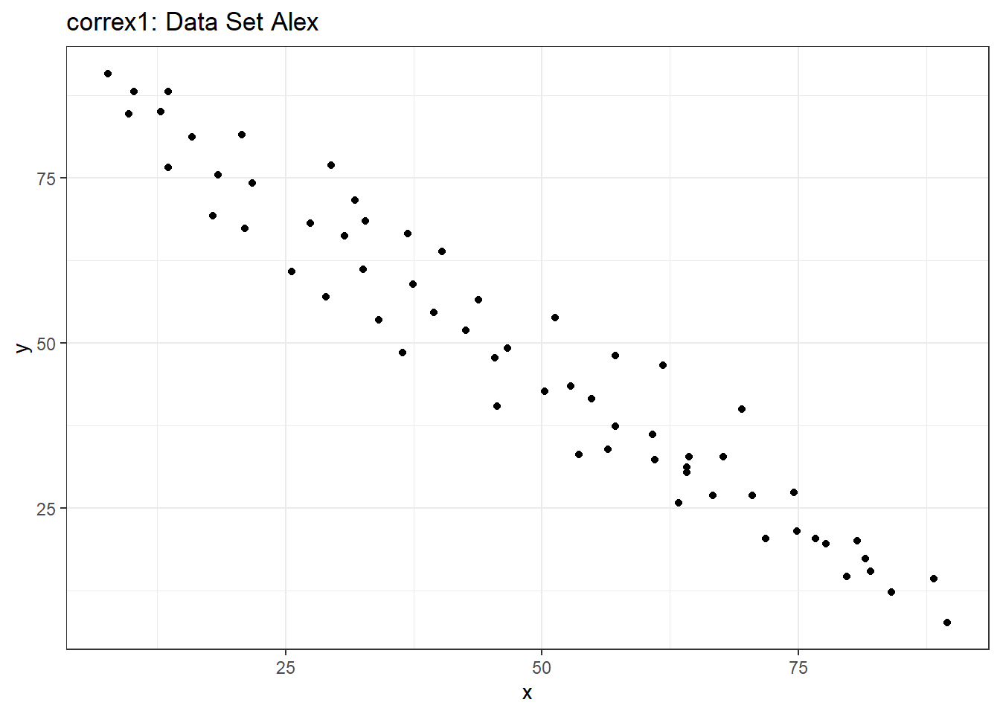
ggplot(filter(correx1, set == "Alex"), aes(x = x, y = y)) +
geom_point() +
geom_smooth(method = "loess", formula = y ~ x, col = "blue") +
labs(title = "correx1: Alex, with loess smooth")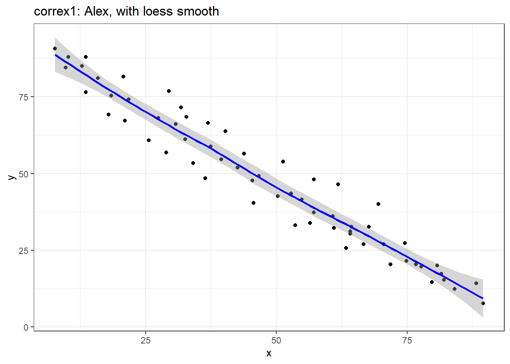
setA <- filter(correx1, set == "Alex")
ggplot(setA, aes(x = x, y = y)) +
geom_point() +
geom_smooth(method = "lm", formula = y ~ x, col = "red") +
labs(title = "correx1: Alex, with Fitted Linear Model") +
annotate("text", x = 75, y = 75, col = "purple", size = 6,
label = paste("Pearson r = ", round_half_up(cor(setA$x, setA$y),3))) +
annotate("text", x = 50, y = 15, col = "red", size = 5,
label = paste("y = ", round_half_up(coef(lm(setA$y ~ setA$x))[1],3),
round_half_up(coef(lm(setA$y ~ setA$x))[2],2), "x"))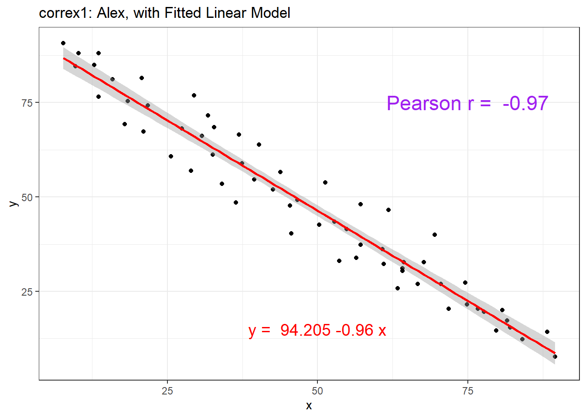
13.5.2 Data Set Bonnie
setB <- filter(correx1, set == "Bonnie")
ggplot(setB, aes(x = x, y = y)) +
geom_point() +
labs(title = "correx1: Data Set Bonnie")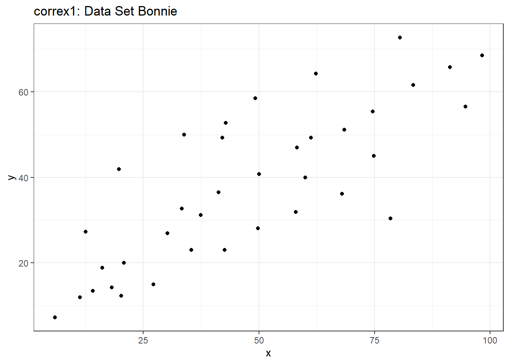
ggplot(setB, aes(x = x, y = y)) +
geom_point() +
geom_smooth(method = "lm", formula = y ~ x, col = "red") +
labs(title = "correx1: Bonnie, with Fitted Linear Model") +
annotate("text", x = 25, y = 65, col = "purple", size = 6,
label = paste("Pearson r = ", round_half_up(cor(setB$x, setB$y),2))) +
annotate("text", x = 50, y = 15, col = "red", size = 5,
label = paste("y = ", round_half_up(coef(lm(setB$y ~ setB$x))[1],3),
" + ",
round_half_up(coef(lm(setB$y ~ setB$x))[2],2), "x"))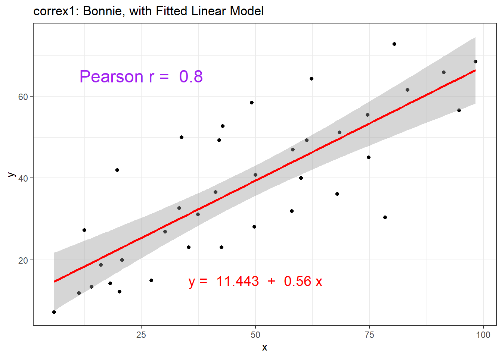
13.5.3 Correlations for All Six Data Sets in correx1
Let’s look at the Pearson correlations associated with each of the six data sets contained in the correx1 example.
tab1 <- correx1 |>
group_by(set) |>
summarise("Pearson r" = round_half_up(cor(x, y, use="complete"),2))
tab1 |>
kbl() |>
kable_styling(full_width = FALSE)| set | Pearson r |
|---|---|
| Alex | -0.97 |
| Bonnie | 0.80 |
| Colin | -0.80 |
| Danielle | 0.00 |
| Earl | -0.01 |
| Fiona | 0.00 |
13.5.4 Data Set Colin
It looks like the picture for Colin should be very similar (in terms of scatter) to the picture for Bonnie, except that Colin will have a negative slope, rather than the positive one Bonnie has. Is that how this plays out?
setBC <- filter(correx1, set == "Bonnie" | set == "Colin")
ggplot(setBC, aes(x = x, y = y)) +
geom_point() +
geom_smooth(method = "lm", formula = y ~ x, col = "red") +
facet_wrap(~ set)
Uh, oh. It looks like the point in Colin at the top right is twisting what would otherwise be a very straight regression model with an extremely strong negative correlation. There’s no better way to look for outliers than to examine the scatterplot.
13.5.5 Draw the Picture!
We’ve seen that Danielle, Earl and Fiona all show Pearson correlations of essentially zero. However, the three data sets look very different in a scatterplot.
ggplot(correx1, aes(x = x, y = y)) +
geom_point() +
geom_smooth(method = "loess", formula = y ~ x) +
facet_wrap(~ set)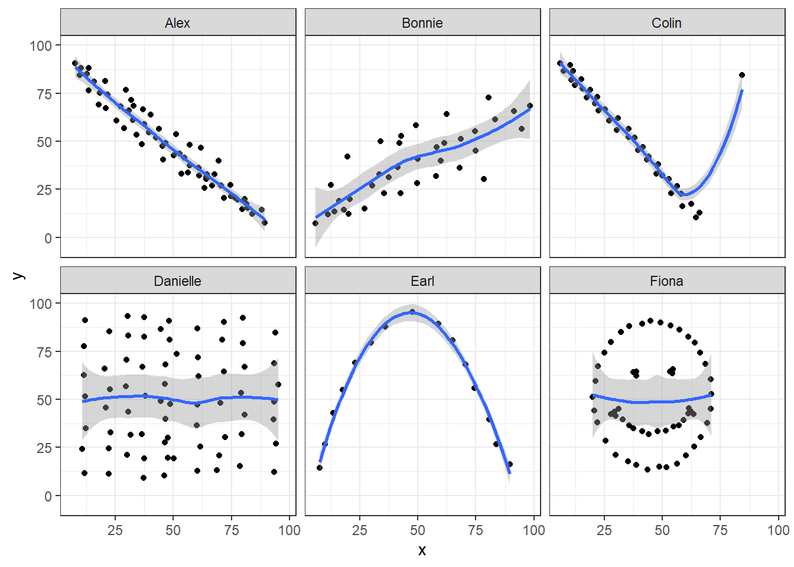
When we learn that the correlation is zero, we tend to assume we have a picture like the Danielle data set. If Danielle were our real data, we might well think that x would be of little use in predicting y.
- But what if our data looked like Earl? In the Earl data set, x is incredibly helpful in predicting y, but we can’t use a straight line model - instead, we need a non-linear modeling approach.
- You’ll recall that the Fiona data set also had a Pearson correlation of zero. But here, the picture is rather more interesting.
So, remember, draw the appropriate scatterplot whenever you make use of a correlation coefficient.
13.6 Estimating Correlation from Scatterplots
The correx2 data set is designed to help you calibrate yourself a bit in terms of estimating a correlation from a scatterplot. There are 11 data sets buried within the correx2 example, and they are labeled by their Pearson correlation coefficients, ranging from r = 0.01 to r = 0.999
# A tibble: 11 × 2
set cor
<chr> <dbl>
1 Set 01 0.01
2 Set 10 0.102
3 Set 20 0.202
4 Set 30 0.301
5 Set 40 0.403
6 Set 50 0.499
7 Set 60 0.603
8 Set 70 0.702
9 Set 80 0.799
10 Set 90 0.902
11 Set 999 0.999Here is a plot of the 11 data sets, showing the increase in correlation from 0.01 (in Set 01) to 0.999 (in Set 999).
ggplot(correx2, aes(x = x, y = y)) +
geom_point() +
facet_wrap(~ set) +
labs(title = "Pearson Correlations from 0.01 to 0.999")
Note that R will allow you to fit a straight line model to any of these relationships, no matter how appropriate it might be to do so.
ggplot(correx2, aes(x = x, y = y)) +
geom_point() +
geom_smooth(method = "lm", formula = y ~ x, col = "red") +
facet_wrap(~ set) +
labs(title = "R will fit a straight line to anything.")
ggplot(correx2, aes(x = x, y = y)) +
geom_point() +
geom_smooth(col = "blue") +
facet_wrap(~ set) +
labs(title = "Even if a loess smooth suggests non-linearity.")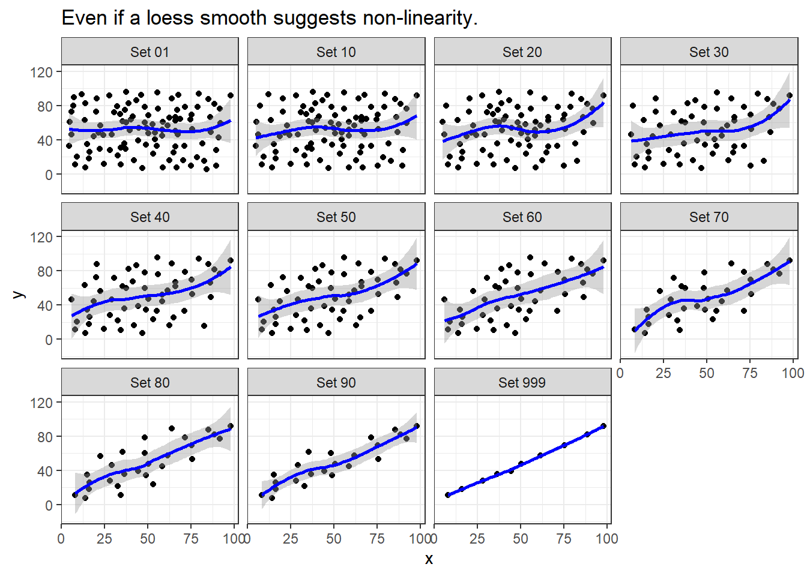
ggplot(correx2, aes(x = x, y = y, color = factor(group))) +
geom_point() +
guides(color = "none") +
facet_wrap(~ set) +
labs(title = "Note: The same 10 points (in red) are in each plot.")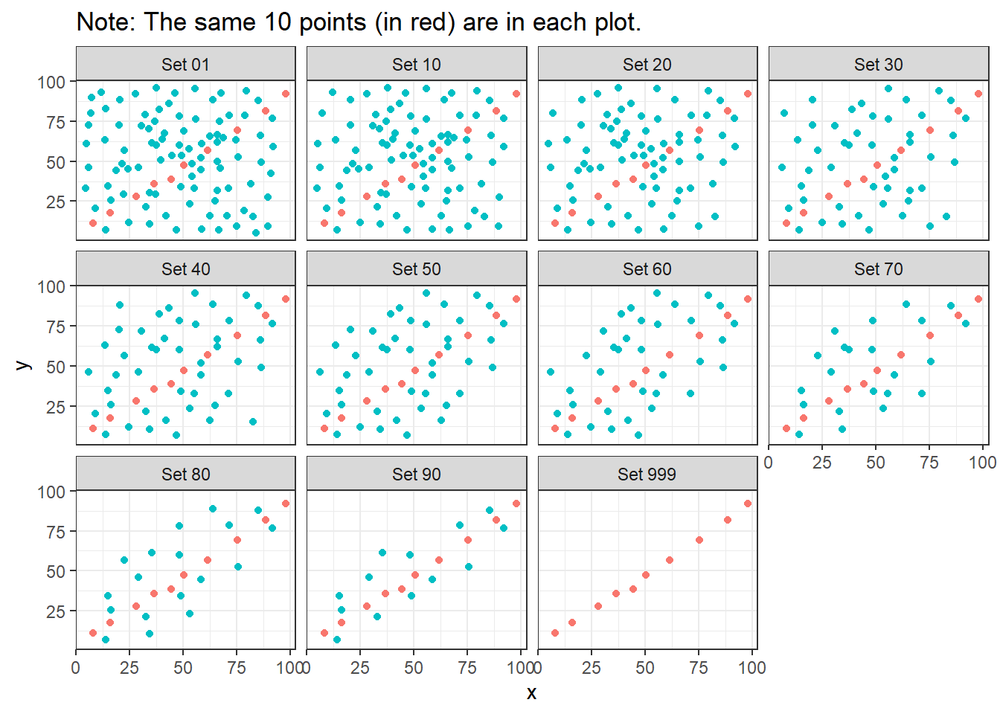
Note that the same 10 points are used in each of the data sets. It’s always possible that a lurking subgroup of the data within a scatterplot follows a very strong linear relationship. This is why it’s so important (and difficult) not to go searching for such a thing without a strong foundation of logic, theory and prior empirical evidence.
13.7 The Spearman Rank Correlation
The Spearman rank correlation coefficient is a rank-based measure of statistical dependence that assesses how well the relationship between X and Y can be described using a monotone function even if that relationship is not linear.
- A monotone function preserves order, that is, Y must either be strictly increasing as X increases, or strictly decreasing as X increases.
- A Spearman correlation of 1.0 indicates simply that as X increases, Y always increases.
- Like the Pearson correlation, the Spearman correlation is dimension-free, and falls between -1 and +1.
- A positive Spearman correlation corresponds to an increasing (but not necessarily linear) association between X and Y, while a negative Spearman correlation corresponds to a decreasing (but again not necessarily linear) association.
13.7.1 Spearman Formula
To calculate the Spearman rank correlation, we take the ranks of the X and Y data, and then apply the usual Pearson correlation. To find the ranks, sort X and Y into ascending order, and then number them from 1 (smallest) to n (largest). In the event of a tie, assign the average rank to the tied subjects.
13.7.2 Comparing Pearson and Spearman Correlations
Let’s look at the nnyfs data again.
fat protein
fat 1.0000000 0.6671209
protein 0.6671209 1.0000000 fat protein
fat 1.0000000 0.6577489
protein 0.6577489 1.0000000The Spearman and Pearson correlations are not especially different in this case.
13.7.3 Spearman vs. Pearson Example 1
The next few plots describe relationships where we anticipate the Pearson and Spearman correlations might differ in their conclusions.
Example 1 shows a function where the Pearson correlation is 0.925 (a strong but not perfect linear relation), but the Spearman correlation is 1 because the relationship is monotone, even though it is not perfectly linear.
ggplot(correx3, aes(x = x1, y = y1)) +
geom_point() +
labs(title = "Spearman vs. Pearson, Example 1") +
annotate("text", x = -10, y = 20,
label = paste("Pearson r = ",
round_half_up(cor(correx3$x1, correx3$y1,
use = "complete.obs"),3),
", Spearman r = ",
round_half_up(cor(correx3$x1, correx3$y1, method = "spearman",
use = "complete.obs"),3)))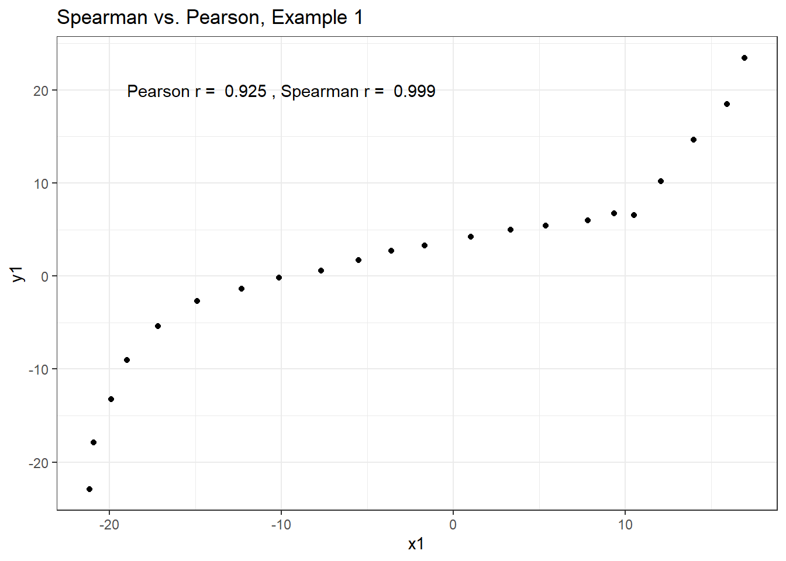
So, a positive Spearman correlation corresponds to an increasing (but not necessarily linear) association between x and y.
13.7.4 Spearman vs. Pearson Example 2
Example 2 shows that a negative Spearman correlation corresponds to a decreasing (but, again, not necessarily linear) association between x and y.
ggplot(correx3, aes(x = x2, y = y2)) +
geom_point(col = "purple") +
geom_smooth(method = "loess", formula = y ~ x, se = FALSE) +
labs(title = "Spearman vs. Pearson, Example 2") +
annotate("text", x = 0, y = 20, col = "purple",
label = paste("Pearson r = ",
round_half_up(cor(correx3$x2, correx3$y2,
use = "complete.obs"),2),
", Spearman r = ",
round_half_up(cor(correx3$x2, correx3$y2, method = "spearman",
use = "complete.obs"),2)))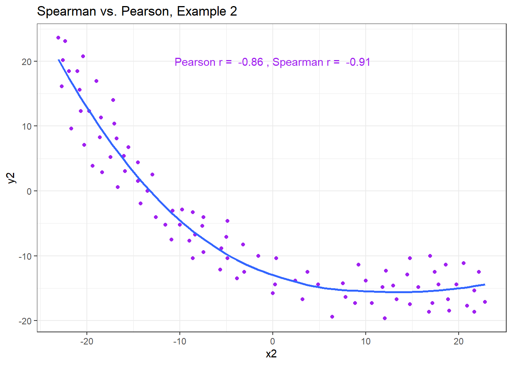
13.7.5 Spearman vs. Pearson Example 3
The Spearman correlation is less sensitive than the Pearson correlation is to strong outliers that are unusual on either the X or Y axis, or both. That is because the Spearman rank coefficient limits the outlier to the value of its rank.
In Example 3, for instance, the Spearman correlation reacts much less to the outliers around X = 12 than does the Pearson correlation.
ggplot(correx3, aes(x = x3, y = y3)) +
geom_point(col = "blue") +
labs(title = "Spearman vs. Pearson, Example 3") +
annotate("text", x = 5, y = -15, col = "blue",
label = paste("Pearson r = ",
round_half_up(cor(correx3$x3, correx3$y3,
use = "complete.obs"),2),
", Spearman r = ",
round_half_up(cor(correx3$x3, correx3$y3, method = "spearman",
use = "complete.obs"),2)))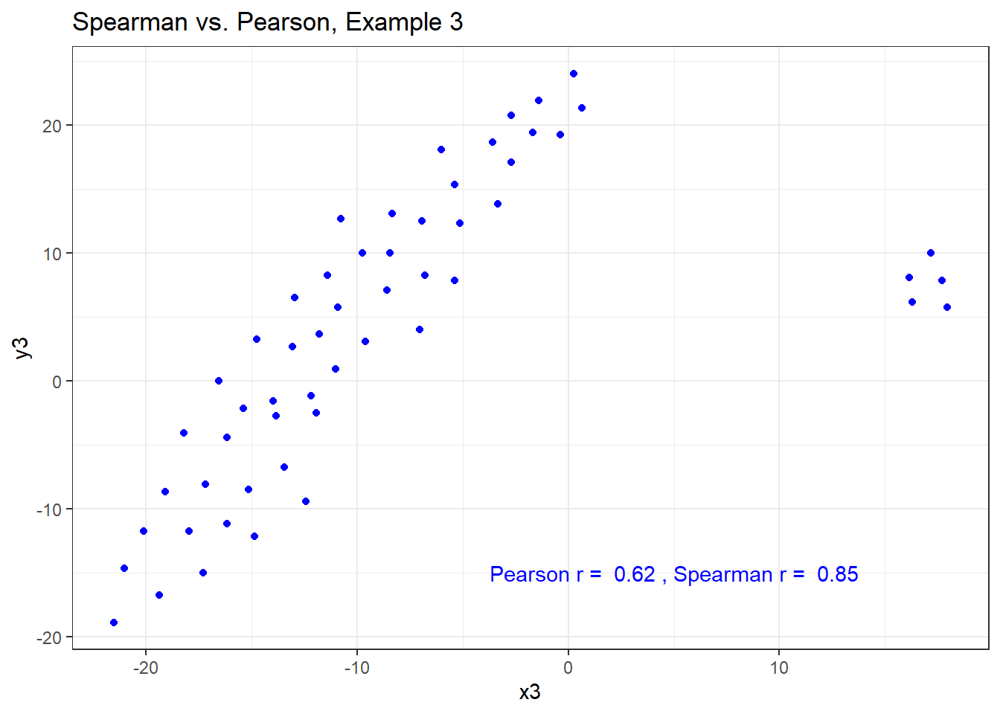
13.7.6 Spearman vs. Pearson Example 4
The use of a Spearman correlation is no substitute for looking at the data. For non-monotone data like what we see in Example 4, neither the Spearman nor the Pearson correlation alone provides much guidance, and just because they are (essentially) telling you the same thing, that doesn’t mean what they’re telling you is all that helpful.
ggplot(correx3, aes(x = x4, y = y4)) +
geom_point(col = "purple") +
geom_smooth(method = "loess", formula = y ~ x, se = FALSE) +
labs(title = "Spearman vs. Pearson, Example 4") +
annotate("text", x = 10, y = 20, col = "purple",
label = paste("Pearson r = ",
round_half_up(cor(correx3$x4, correx3$y4,
use = "complete.obs"),2),
", Spearman r = ",
round_half_up(cor(correx3$x4, correx3$y4, method = "spearman",
use = "complete.obs"),2)))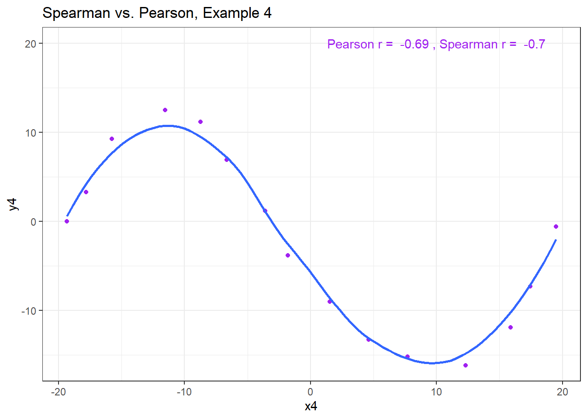
13.8 Coming Up
Next, we’ll look at some options for improving the fit of a linear model to a scatterplot that shows a strong, but not a linear association.